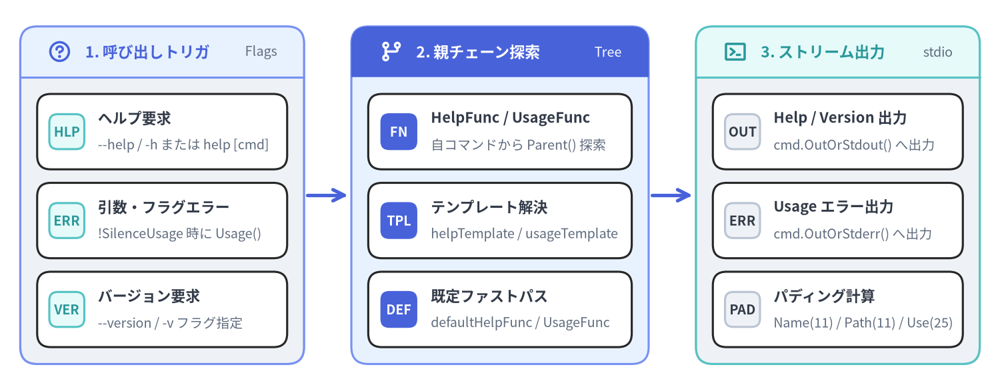
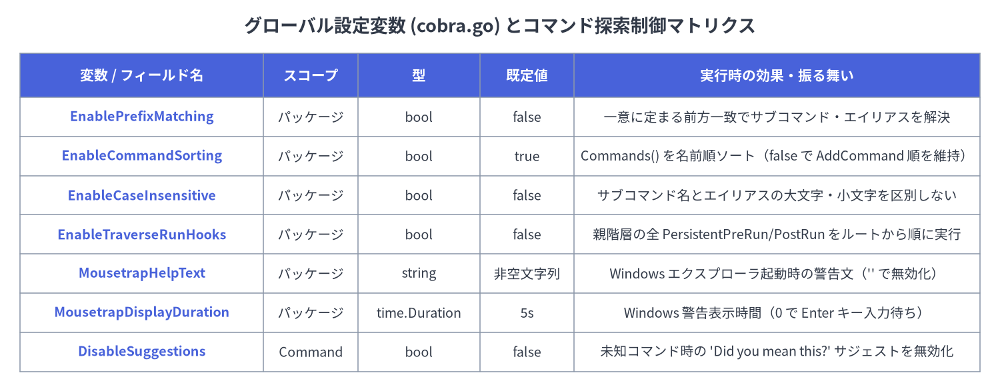

07. ヘルプ・Usage・テンプレート・グローバル設定
Cobra のヘルプ（Help）、使用法（Usage）、バージョン（Version）、タイポサジェスト（Suggestions）、およびパッケージレベルのグローバル設定群（command.go および cobra.go）は、CLI のメタデータが親子コマンドツリーをどのように継承し、stdout または stderr へどのように整形・出力されるかを制御します。すべてのテンプレートおよびハンドラ関数は**子から親へ遡る決定論的な探索チェーン（Parent-Chain Lookup）**に従うため、ルートコマンドで全体のフォーマットを一括変更しつつ、特定のサブコマンドだけ個別にオーバーライドすることが可能です。

Source Code
from drawlib.canvas import save, setup
from drawlib.icons import phosphor
from drawlib.lines import line
from drawlib.smartarts import CardList, Panel
from drawlib.styles import Styles
setup(width=148, height=58, dpi=150)
# 1. Left Panel: Triggers & Flags
p1 = Panel(
"1. 呼び出しトリガ",
"Flags",
style=Styles.Neutral,
header_style=Styles.PrimaryNeutral,
text_style=Styles.PrimaryBold.patch(text_size=11.0),
description_style=Styles.Muted.patch(text_size=9.5),
header_height=7.5,
icon=phosphor.question,
icon_style=Styles.PrimaryBold,
)
p1.draw(xy=(3, 4), width=42, height=50)
ix1, iw1, ih1 = p1.get_content_box(xy=(3, 4), width=42, height=50, padding=(2.5, 2.5))
cl1 = CardList(
style=Styles.White,
text_style=Styles.DarkBold.patch(text_size=10.5),
description_style=Styles.Muted.patch(text_size=9.5),
badge_shape="rounded_rect",
badge_style=Styles.SecondaryNeutral,
badge_text_style=Styles.SecondaryBold.patch(text_size=9.5),
spacing=2.0,
)
cl1.add("ヘルプ要求", "--help / -h または help [cmd]", badge_text="HLP")
cl1.add("引数・フラグエラー", "!SilenceUsage 時に Usage()", badge_text="ERR")
cl1.add("バージョン要求", "--version / -v フラグ指定", badge_text="VER")
cl1.draw(xy=ix1, width=iw1, height=ih1)
line((45.5, 29), (51.5, 29), arrow_head="->", style=Styles.PrimaryBold)
# 2. Middle Panel: Parent-Chain Lookup
p2 = Panel(
"2. 親チェーン探索",
"Tree",
style=Styles.PrimaryNeutral,
header_style=Styles.PrimaryFlat,
text_style=Styles.WhiteBold.patch(text_size=11.0),
description_style=Styles.White.patch(text_size=9.5),
header_height=7.5,
icon=phosphor.git_branch,
icon_style=Styles.WhiteBold,
)
p2.draw(xy=(52, 4), width=44, height=50)
ix2, iw2, ih2 = p2.get_content_box(xy=(52, 4), width=44, height=50, padding=(2.5, 2.5))
cl2 = CardList(
style=Styles.White,
text_style=Styles.DarkBold.patch(text_size=10.5),
description_style=Styles.Muted.patch(text_size=9.5),
badge_shape="rounded_rect",
badge_style=Styles.PrimaryFlat,
badge_text_style=Styles.WhiteBold.patch(text_size=9.5),
spacing=2.0,
)
cl2.add("HelpFunc / UsageFunc", "自コマンドから Parent() 探索", badge_text="FN")
cl2.add("テンプレート解決", "helpTemplate / usageTemplate", badge_text="TPL")
cl2.add("既定ファストパス", "defaultHelpFunc / UsageFunc", badge_text="DEF")
cl2.draw(xy=ix2, width=iw2, height=ih2)
line((96.5, 29), (102.5, 29), arrow_head="->", style=Styles.PrimaryBold)
# 3. Right Panel: Output Streams
p3 = Panel(
"3. ストリーム出力",
"stdio",
style=Styles.Neutral,
header_style=Styles.SecondaryNeutral,
text_style=Styles.SecondaryBold.patch(text_size=11.0),
description_style=Styles.Muted.patch(text_size=9.5),
header_height=7.5,
icon=phosphor.terminal_window,
icon_style=Styles.SecondaryBold,
)
p3.draw(xy=(103, 4), width=42, height=50)
ix3, iw3, ih3 = p3.get_content_box(xy=(103, 4), width=42, height=50, padding=(2.5, 2.5))
cl3 = CardList(
style=Styles.White,
text_style=Styles.DarkBold.patch(text_size=10.5),
description_style=Styles.Muted.patch(text_size=9.5),
badge_shape="rounded_rect",
badge_style=Styles.Neutral,
badge_text_style=Styles.DarkBold.patch(text_size=9.5),
spacing=2.0,
)
cl3.add("Help / Version 出力", "cmd.OutOrStdout() へ出力", badge_text="OUT")
cl3.add("Usage エラー出力", "cmd.OutOrStderr() へ出力", badge_text="ERR")
cl3.add("パディング計算", "Name(11) / Path(11) / Use(25)", badge_text="PAD")
cl3.draw(xy=ix3, width=iw3, height=ih3)
save()
methodヘルプ制御メソッド（Help, HelpFunc, SetHelp, InitDefaultHelp）#
command.go で定義されるヘルプ系メソッドは、--help / -h フラグ、help [command] サブコマンド、カスタムヘルプ関数、および text/template によるヘルプテンプレートのオーバーライドを管理します。
Go シグネチャ#
// Help puts out the help for the command. Used when a user calls help [command].
// Can be defined by user by overriding HelpFunc.
func (c *Command) Help() error
// HelpFunc returns either the function set by SetHelpFunc for this command
// or a parent, or it returns a function with default help behavior.
func (c *Command) HelpFunc() func(*Command, []string)
// SetHelpFunc sets help function. Can be defined by Application.
func (c *Command) SetHelpFunc(f func(*Command, []string))
// SetHelpCommand sets help command.
func (c *Command) SetHelpCommand(cmd *Command)
// SetHelpCommandGroupID sets the group id of the help command.
func (c *Command) SetHelpCommandGroupID(groupID string)
// SetHelpTemplate sets help template to be used. Application can use it to set custom template.
func (c *Command) SetHelpTemplate(s string)
// HelpTemplate return help template for the command.
func (c *Command) HelpTemplate() string
// InitDefaultHelpCmd adds default help command to c.
// If c already has help command or c has no subcommands, it will do nothing.
func (c *Command) InitDefaultHelpCmd()
// InitDefaultHelpFlag adds default help flag to c.
// If c already has help flag, it will do nothing.
func (c *Command) InitDefaultHelpFlag()
ヘルプ解決と出力ストリームの仕様#
- 出力先ストリーム（
OutOrStdout）:Usage()がOutOrStderr()へ出力されるのに対し、デフォルトのHelpFunc()はc.OutOrStdout()（標準出力）へ書き込まれます。これにより<prog> --help | lessのようなパイプ処理がそのまま機能します。 - 親チェーン継承（Parent-Chain Inheritance）:
c.HelpFunc()は自コマンドのc.helpFuncを調べ、nilであればc.Parent().HelpFunc()を再帰的に辿ります。- デフォルトの
HelpFunc内部ではc.getHelpTemplateFunc()を呼び出し、同様に親方向へhelpTemplateを探索します。カスタムテンプレートが設定されていない場合は、Go で実装された高速なdefaultHelpFunc（c.Longまたはc.Shortに続けてc.UsageString()を出力）が実行されます。
InitDefaultHelpCmd():ExecuteC()やcobra/docの各生成関数の冒頭で自動的に呼び出されます。c.HasSubCommands()がtrueかつc.helpCommand == nilの場合にのみhelp [command]サブコマンドを生成し、<prog> help <TAB>でサブコマンド名を動的補完するValidArgsFunctionも自動登録します。InitDefaultHelpFlag(): 永続フラグをマージした上で、"help"フラグが未定義であれば-h, --help（bool型、FlagSetByCobraAnnotation付与）を登録します。
methodUsage・Version・パディング計算メソッド#
Help() がコマンドの詳細説明（Long）を含む完全なヘルプを表示するのに対し、Usage() は書式（Synopsis）・サブコマンド一覧・フラグ一覧をコンパクトに出力します（Help() の内部から呼ばれるほか、SilenceUsage == false の状態でエラーが発生した際にも自動実行されます）。
Go シグネチャ#
// Usage puts out the usage for the command. Used when a user provides invalid input.
// Can be defined by user by overriding UsageFunc.
func (c *Command) Usage() error
// UsageFunc returns either the function set by SetUsageFunc for this command
// or a parent, or it returns a default usage function.
func (c *Command) UsageFunc() (f func(*Command) error)
// SetUsageFunc sets usage function. Usage can be defined by application.
func (c *Command) SetUsageFunc(f func(*Command) error)
// UsageString returns usage string.
func (c *Command) UsageString() string
// SetUsageTemplate sets usage template. Can be defined by Application.
func (c *Command) SetUsageTemplate(s string)
// UsageTemplate returns usage template for the command.
func (c *Command) UsageTemplate() string
// SetVersionTemplate sets version template to be used. Application can use it to set custom template.
func (c *Command) SetVersionTemplate(s string)
// VersionTemplate return version template for the command.
func (c *Command) VersionTemplate() string
// InitDefaultVersionFlag adds default version flag to c if c.Version is non-empty.
func (c *Command) InitDefaultVersionFlag()
// Padding calculation methods used by Usage/Help templates
func (c *Command) NamePadding() int
func (c *Command) CommandPathPadding() int
func (c *Command) UsagePadding() int
メソッドおよびパディング最小幅仕様#
| メソッド | 戻り値型 | 最小幅（下限値） | 説明 |
|---|---|---|---|
Usage() |
error |
— | c.UsageFunc()(c) を呼び出し、永続フラグをマージして Usage 出力を c.OutOrStderr() へ書き込みます。 |
UsageString() |
string |
— | c.outWriter と c.errWriter を一時的にメモリ上の bytes.Buffer に差し替えて c.Usage() を実行し、元の Writer を復元した上で結果文字列を返します。 |
InitDefaultVersionFlag() |
void |
— | c.Version == "" の場合は何もしません。非空の場合は --version フラグ（-v が未使用なら短縮形 -v も追加）を登録します。 |
NamePadding() |
int |
11 (minNamePadding) |
max(11, c.parent.commandsMaxNameLen) を返します。Available Commands: の列揃え（{{rpad .Name .NamePadding}}）に使用されます。 |
CommandPathPadding() |
int |
11 (minCommandPathPadding) |
max(11, c.parent.commandsMaxCommandPathLen) を返します。Additional help topics: の列揃えに使用されます。 |
UsagePadding() |
int |
25 (minUsagePadding) |
max(25, c.parent.commandsMaxUseLen) を返します。カスタムテンプレートで Use 文字列全体の列揃えを行う際に利用できます。 |
funcテンプレート関数登録（AddTemplateFunc, AddTemplateFuncs, Gt, Eq）#
cobra.go では、カスタムの UsageTemplate、HelpTemplate、VersionTemplate 内で呼び出せるパッケージレベルの templateFuncs マップ（template.FuncMap）を管理しています。
Go シグネチャ#
// AddTemplateFunc adds a template function that's available to Usage and Help template generation.
func AddTemplateFunc(name string, tmplFunc interface{})
// AddTemplateFuncs adds multiple template functions that are available to Usage and Help template generation.
func AddTemplateFuncs(tmplFuncs template.FuncMap)
// Gt takes two types and checks whether the first type is greater than the second.
// In case of types Arrays, Chans, Maps and Slices, Gt will compare their lengths.
// Ints are compared directly while strings are first parsed as ints and then compared.
func Gt(a interface{}, b interface{}) bool
// Eq takes two types and checks whether they are equal.
// Supported types are int and string. Unsupported types will panic.
func Eq(a interface{}, b interface{}) bool
組み込みテンプレート関数一覧（cobra.go）#
| テンプレート関数名 | バインドされる実装 | テンプレート内での役割 |
|---|---|---|
"trim" |
strings.TrimSpace |
前後の空白文字を除去します。 |
"trimRightSpace" |
trimRightSpace |
末尾の空白文字（unicode.IsSpace）を除去します。 |
"trimTrailingWhitespaces" |
trimRightSpace |
trimRightSpace の別名（defaultUsageTemplate で .LocalFlags.FlagUsages の整形に使用）。 |
"appendIfNotPresent" |
appendIfNotPresent |
対象文字列に指定部分文字列が含まれていない場合のみスペース区切りで末尾に連結します。 |
"rpad" |
rpad(s string, padding int) string |
指定文字数 padding まで右側をスペース埋めします（fmt.Sprintf("%%-%ds", padding)）。 |
"gt" |
cobra.Gt |
スライス・マップ・配列・チャネルの要素数、または整数・数値文字列の大小（left > right）を比較します。 |
"eq" |
cobra.Eq |
int 系または string の等価性を判定します（スライス等を渡すと panic します）。 |
methodタイポサジェスト・フラグエラー処理・FParseErrWhitelist#
サブコマンド名のタイプミスや未知のフラグが渡された際、Cobra はレーベンシュタイン距離（編集距離）に基づく候補提示やフラグパースエラーのフック・無視設定を提供します（command.go および cobra.go）。
Go シグネチャと構造体#
// FParseErrWhitelist configures Flag parse errors to be ignored
type FParseErrWhitelist flag.ParseErrorsAllowlist
// （実体は pflag.ParseErrorsAllowlist = struct { UnknownFlags bool }）
// SuggestionsFor provides suggestions for the typedName.
func (c *Command) SuggestionsFor(typedName string) []string
// SetFlagErrorFunc sets a function to generate an error when flag parsing fails.
func (c *Command) SetFlagErrorFunc(f func(*Command, error) error)
// FlagErrorFunc returns either the function set by SetFlagErrorFunc for this
// command or a parent, or it returns a function which returns the original error.
func (c *Command) FlagErrorFunc() (f func(*Command, error) error)
// SetErrPrefix sets error message prefix to be used. Application can use it to set custom prefix.
func (c *Command) SetErrPrefix(s string)
// ErrPrefix return error message prefix for the command (defaults to "Error:").
func (c *Command) ErrPrefix() string
サジェスト算出アルゴリズム（SuggestionsFor）#
Find で未知のサブコマンドが検出され、c.DisableSuggestions が false の場合：
c.SuggestionsMinimumDistance <= 0の場合は既定値2に初期化されます。c.SuggestionsFor(typedName)は利用可能なすべての子コマンド（cmd.IsAvailableCommand() == true）を走査し、以下のいずれかを満たすcmd.Name()を返します。- 大文字・小文字を区別しないレーベンシュタイン距離
ld(typedName, cmd.Name(), true) <= c.SuggestionsMinimumDistance。 cmd.Name()がtypedNameで前方一致する（大文字・小文字無視のstrings.HasPrefix）。cmd.SuggestForスライス内の明示的キーワードと一致する（strings.EqualFold）。
- 大文字・小文字を区別しないレーベンシュタイン距離
未知のフラグの無視設定（FParseErrWhitelist）#
cmd.FParseErrWhitelist.UnknownFlags = true を設定すると、ParseFlags 内で cmd.Flags().Parse(args) を実行する直前に pflag.ParseErrorsAllowlist へ反映され、未定義のフラグが渡されてもエラーにせず無視できるようになります（下位プロセスへフラグを透過転送するラッパー CLI 等で有用です）。
configパッケージレベル設定変数（cobra.go）#
cobra.go は、プロセス全体のコマンド探索・ソート順・ライフサイクルフック継承・Windows エクスプローラ起動時の挙動を制御する 6 つのパッケージ変数をエクスポートしています。

Source Code
from drawlib.canvas import save, setup
from drawlib.smartarts import Table
from drawlib.styles import Colors, Styles
from drawlib.text import text
setup(width=148, height=58, dpi=150)
text(
(74, 54),
"グローバル設定変数 (cobra.go) とコマンド探索制御マトリクス",
style=Styles.DarkBold.patch(text_size=13.0),
)
tbl = Table(
cell_style=Styles.White,
text_style=Styles.Dark.patch(text_size=10.0),
header_cell_style=Styles.PrimaryFlat,
header_text_style=Styles.WhiteBold.patch(text_size=10.5),
border_style=Styles.MutedThin,
)
rows = [
["変数 / フィールド名", "スコープ", "型", "既定値", "実行時の効果・振る舞い"],
["EnablePrefixMatching", "パッケージ", "bool", "false", "一意に定まる前方一致でサブコマンド・エイリアスを解決"],
["EnableCommandSorting", "パッケージ", "bool", "true", "Commands() を名前順ソート（false で AddCommand 順を維持）"],
["EnableCaseInsensitive", "パッケージ", "bool", "false", "サブコマンド名とエイリアスの大文字・小文字を区別しない"],
["EnableTraverseRunHooks", "パッケージ", "bool", "false", "親階層の全 PersistentPreRun/PostRun をルートから順に実行"],
["MousetrapHelpText", "パッケージ", "string", "非空文字列", "Windows エクスプローラ起動時の警告文（'' で無効化）"],
["MousetrapDisplayDuration", "パッケージ", "time.Duration", "5s", "Windows 警告表示時間（0 で Enter キー入力待ち）"],
["DisableSuggestions", "Command", "bool", "false", "未知コマンド時の 'Did you mean this?' サジェストを無効化"],
]
tbl.set_style_cell_evenodd(
even_color=Colors.Light,
even_text_style=Styles.Dark.patch(text_size=9.5),
odd_color=Colors.White,
odd_text_style=Styles.Dark.patch(text_size=9.5),
)
tbl.set_style_cell_header(
background_color=Colors.Primary,
text_style=Styles.WhiteBold.patch(text_size=10.0),
)
tbl.set_style_cell(
background_color=Colors.Light,
text_style=Styles.PrimaryBold.patch(text_size=9.5),
rows=[1, 2, 3, 4, 5, 6, 7],
columns=[0],
)
tbl.draw_flexible(
xy=(3, 50),
column_widths=[36, 14, 18, 14, 60],
row_heights=[6.5, 5.8, 5.8, 5.8, 5.8, 5.8, 5.8, 5.8],
data=rows,
align="top_left",
)
save()
Go 宣言（cobra.go）#
// EnablePrefixMatching allows setting automatic prefix matching.
var EnablePrefixMatching = false
// EnableCommandSorting controls sorting of the slice of commands, which is turned on by default.
// To disable sorting, set it to false.
var EnableCommandSorting = true
// EnableCaseInsensitive allows case-insensitive commands names. (case sensitive by default)
var EnableCaseInsensitive = false
// EnableTraverseRunHooks executes persistent pre-run and post-run hooks from all parents.
// By default this is disabled, which means only the first run hook to be found is executed.
var EnableTraverseRunHooks = false
// MousetrapHelpText enables an information splash screen on Windows
// if the CLI is started from explorer.exe. To disable, set to "".
var MousetrapHelpText = `This is a command line tool.
You need to open cmd.exe and run it from there.
`
// MousetrapDisplayDuration controls how long the MousetrapHelpText message is displayed on Windows
// if the CLI is started from explorer.exe. Set to 0 to wait for the return key to be pressed.
var MousetrapDisplayDuration = 5 * time.Second
各グローバル設定の詳細解説#
EnablePrefixMatching:trueに設定すると、findNext()で完全一致するサブコマンドが見つからなかった場合にコマンド名・エイリアスの前方一致検索を行います。候補がただ 1 つに絞られた場合（len(matches) == 1）のみ採用され、複数マッチする場合は曖昧とみなしてnilを返します。EnableCommandSorting:c.Commands()のソート動作を制御します。既定（true）ではName()の辞書順でソートされますが、Execute()前にcobra.EnableCommandSorting = falseを設定するとAddCommand()で追加した順序がそのまま保持されます。EnableCaseInsensitive:commandNameMatches(s, t)がstrings.EqualFold(s, t)を使用するようになり、サブコマンド名とエイリアスの両方で大文字・小文字を区別しなくなります。EnableTraverseRunHooks:execute()における永続フック（PersistentPreRun[E]/PersistentPostRun[E]）の実行ルールを切り替えます。false（既定）: 実行対象コマンドから親方向へ辿り、最初に見つかった 1 つだけを実行してブレークします。true: ルートから対象コマンドへ向かうトップダウン順（Root→ 親 →cmd）ですべてのPersistentPreRun[E]を実行し、本処理の後にボトムアップ順（cmd→ 親 →Root）ですべてのPersistentPostRun[E]を実行します。
MousetrapHelpText&MousetrapDisplayDuration: Windows 環境（command_win.go）でのみ有効な設定です。ユーザーがexplorer.exeからバイナリをダブルクリックして起動した際、MousetrapHelpTextをコンソールに表示してMousetrapDisplayDuration（0以下の場合は Enter キー入力まで）待機します。cobra.MousetrapHelpText = ""を代入すると無効化できます。
関連リファレンス#
- 01. Command 構造体と設定フィールド —
SilenceErrors、SilenceUsage、Version、SuggestForなどのフィールド仕様。 - 02. 実行エンジンとライフサイクルフック —
ExecuteC、PersistentPreRunE、およびEnableTraverseRunHooksによる実行順序の変化。 - 08. ドキュメント自動生成 (
cobra/doc) — コマンドメタデータからの Markdown / Man / ReST / YAML ドキュメント生成。